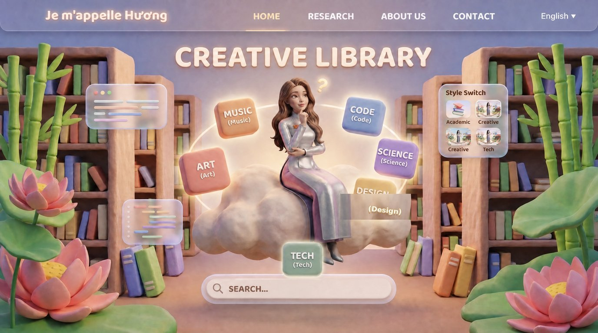

Je m'appelle HươngLecturer & Researcher
Je m'appelle HươngLecturer & Researcher


CREATIVE JOURNAL · NHẬT KÝ SÁNG TẠO
Mỗi món đồ trong hệ sinh thái «Je m'appelle Hương» đều bắt đầu từ một câu hỏi nhỏ, một bản phác nhanh, và rất nhiều lần thử-sai. Đây là những trang nhật ký công khai của hành trình đó.Every item in the «Je m'appelle Hương» ecosystem started from a small question, a quick sketch, and a lot of trial and error. These are the open pages of that journey.
Làm nghiên cứu sinh, tôi thấy một nghịch lý: meta-analysis gộp hàng trăm nghiên cứu, nhưng công cụ thì khô khan và chỉ dành cho chuyên gia. M-AIDA ra đời để lật ngược vấn đề - để máy đọc, còn người quyết định: sinh viên nhập dữ liệu, máy trích mức độ ảnh hưởng, người tự rút kết luận.As a PhD candidate, I saw a paradox: meta-analysis combines hundreds of studies, yet its tools are dry and expert-only. M-AIDA flips it - let the machine read, but let the human decide: students enter the data, the tool extracts effect sizes, people draw their own conclusions.
Sinh viên thuộc lòng công thức hòa vốn nhưng chưa từng «sống» qua một quyết định kinh doanh. BizOn Bật Nghiệp dựng cả lớp học thành bàn cờ đất sét (claymorphism): mỗi nhóm là một tiệm, mỗi nước đi là một quý kinh doanh, rủi ro và may rủi được tung xúc xắc thật. Đồng sáng lập với PGS.TS. Phan Anh Tú. Phần game 3D sau này trở thành Trang viên của website này.Students memorize breakeven formulas but never live through a business decision. BizOn Bật Nghiệp turns the class into a clay chessboard (claymorphism): each team runs a shop, each move is a business quarter, risk and luck roll like dice. Co-created with Assoc. Prof. Dr. Phan Anh Tu. The 3D game later became this website’s Garden.
Sinh viên Cần Thơ học phần lớn bằng điện thoại cũ, mạng chập chờn. EnQuiz được thiết kế offline-first: tải một lần, ôn mọi lúc, có luôn bộ thu âm hướng dẫn song ngữ. Ra mắt 09/08/2026 trên Zenodo, lưu trữ vĩnh viễn tại Software Heritage, lập chỉ mục OpenAIRE - ba ngày sau: 101 lượt xem, 31 lượt tải, nhanh nhất hệ sinh thái.Can Tho students study mostly on older phones with flaky networks. EnQuiz is offline-first: download once, revise anytime, with a bilingual voice-over tour. Released on Zenodo Aug 9, 2026, permanently archived at Software Heritage, indexed on OpenAIRE - three days later: 101 views, 31 downloads, the fastest in the ecosystem.
Avatar Hương AI bắt đầu từ một ý nghĩ vui: nếu nhân vật dẫn tour chính là tôi, thì website không chỉ giới thiệu nghiên cứu mà còn thể hiện người nghiên cứu. Mỗi tư thế (đạp xe, dùng laptop, chỉ đường, áo dài bạc) là một render riêng; giọng đọc ba thứ tiếng (VI/EN/FR) là giọng thật được thu âm tại trang Thu âm - chính chị cũng ghi âm tại đây.The Huong AI avatar began as a playful idea: if the tour guide were me, the website would not only present research but perform the researcher. Each pose (cycling, laptop, wayfinding, silver áo dài) is a separate render; the three-language voice (VI/EN/FR) is real - recorded on the Recording page, where you can record yours too.
Bài «Bật Nghiệp» (BizOn) được remix thành «Mekong Sunfire»: điệp khúc cuối được cắt 15 giây, đưa vào bối cảnh hoàng hôn sông Mekong - ghe thuyền, chợ nổi, cầu gỗ - với nguyên tắc hợp đồng sáng tạo: không chép lời hát, chỉ chữ thương hiệu; không lip-sync; không mặt bóng AI. Ghi chú sản xuất đầy đủ nằm trong repo, công khai như mọi thứ ở đây.The BizOn song «Bật Nghiệp» was remixed into «Mekong Sunfire»: the final chorus is cut to 15 seconds and staged at a Mekong sunset - boats, floating market, wooden bridge - under a creative contract: no lyric transcription, brand typography only; no lip-sync; no AI-gloss faces. Full production notes are open in the repo, like everything else here.
Khuôn viên website ban đầu chỉ là một trang giới thiệu. Nó lớn dần thành thế giới 3D chạy trên Three.js: bảy khu (học thuật, dự án, thư viện, âm nhạc, bảng tin, giới thiệu, kho tương lai), bản đồ điều hướng «Đi đâu?», chế độ Tour tự động, nhạc tần số thư giãn 528Hz/432Hz, và bản đồ Việt Nam chìm có Hoàng Sa - Trường Sa trên mọi trang. Một người làm học thuật chơi Three.js - đó là chỗ nghiên cứu và cá tính gặp nhau.The website began as a plain profile. It grew into a Three.js 3D world: seven zones (academics, projects, library, music, notice board, about, future vault), a «Go where?» navigation map, auto-tour mode, 528Hz/432Hz relaxation audio, and a sinking map of Viet Nam with the Hoàng Sa - Trường Sa islands on every page. A scholar playing Three.js - where research meets personality.